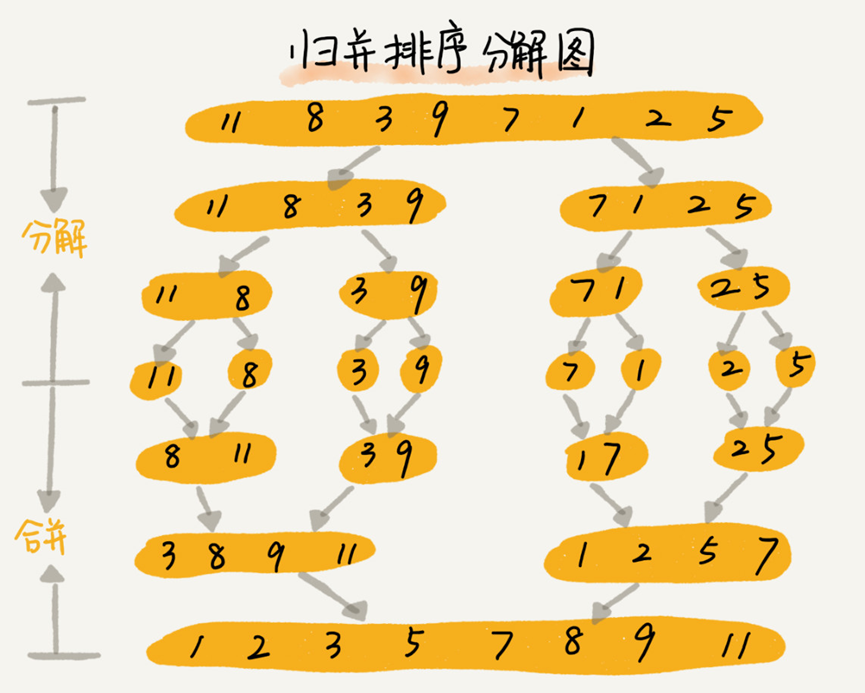
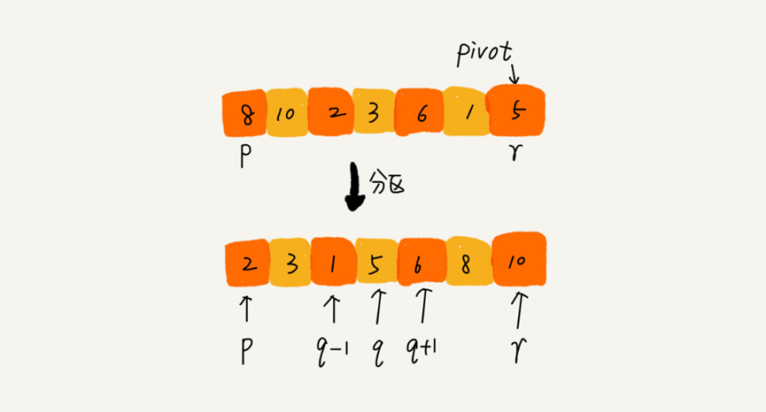
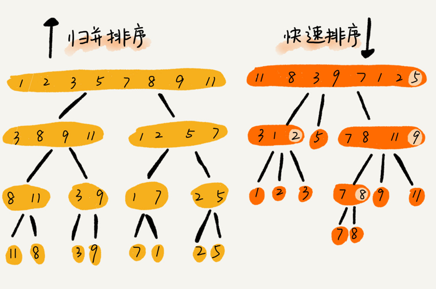

一、分治思想
- 分治思想：分治，顾明思意，就是分而治之，将一个大问题分解成小的子问题来解决，小的子问题解决了，大问题也就解决了。
- 分治与递归的区别：分治算法一般都用递归来实现的。分治是一种解决问题的处理思想，递归是一种编程技巧。
二、归并排序
算法原理
- 先把数组从中间分成前后两部分，然后对前后两部分分别进行排序，再将排序好的两部分合并到一起，这样整个数组就有序了。
这就是归并排序的核心思想。
如何用递归实现归并排序呢？写递归代码的技巧就是分写得出递推公式，然后找到终止条件，最后将递推公式翻译成递归代码。递推公式怎么写？如下
- 递推公式：
merge_sort(p…r) = merge(merge_sort(p…q), merge_sort(q+1…r))- 终止条件：
p >= r不用再继续分解
代码实现
1 | // 归并排序算法, A 是数组，n 表示数组大小 |

性能分析
- 算法稳定性
归并排序稳不稳定关键要看merge()函数，也就是两个子数组合并成一个有序数组的那部分代码。
在合并的过程中，如果A[p…q]和A[q+1…r]之间有值相同的元素，那我们就可以像伪代码中那样，先把A[p…q]中的元素放入tmp数组，这样就保证了值相同的元素，在合并前后的先后顺序不变。
所以，归并排序是一种稳定排序算法。- 时间复杂度：分析归并排序的时间复杂度就是分析递归代码的时间复杂度
如何分析递归代码的时间复杂度？
递归的适用场景是一个问题a可以分解为多个子问题b、c，那求解问题a就可以分解为求解问题b、c。
问题b、c解决之后，我们再把b、c的结果合并成a的结果。若定义求解问题a的时间是T(a)，则求解问题b、c的时间分别是T(b)和T(c)，那就可以得到这样的递推公式：T(a) = T(b) + T(c) + K，其中K等于将两个子问题b、c的结果合并成问题a的结果所消耗的时间。
这里有一个重要的结论：
不仅递归求解的问题可以写成递推公式，递归代码的时间复杂度也可以写成递推公式。
套用这个公式，那么归并排序的时间复杂度就可以表示为：
1 | T(1) = C； n=1 时，只需要常量级的执行时间，所以表示为 C。 |
当$T(n/2^k)=T(1)$时，也就是 $n/2^k=1$，我们得到$k=log2n$。
将k带入上面的公式就得到$T(n)=Cn+nlog2n$。
如用大O表示法，$T(n)$就等于$O(nlogn)$。
所以，归并排序的是复杂度时间复杂度就是$O(nlogn)$。
- 空间复杂度
归并排序算法不是原地排序算法，空间复杂度是$O(n)$
因为归并排序的合并函数，在合并两个数组为一个有序数组时，需要借助额外的存储空间。
为什么空间复杂度是$O(n)$而不是$O(nlogn)$呢？
如果我们按照分析递归的时间复杂度的方法，通过递推公式来求解，那整个归并过程需要的空间复杂度就是$O(nlogn)$，但这种分析思路是有问题的！
因为，在实际上，递归代码的空间复杂度并不是像时间复杂度那样累加，而是这样的过程，
即在每次合并过程中都需要申请额外的内存空间，但是合并完成后，临时开辟的内存空间就被释放掉了，在任意时刻，CPU只会有一个函数在执行，也就只会有一个临时的内存空间在使用。
临时空间再大也不会超过n个数据的大小，所以空间复杂度是$O(n)$。
三、快速排序
算法原理
- 快排的思想是这样的：如果要排序数组中下标从
p到r之间的一组数据，我们选择p到r之间的任意一个数据作为pivot（分区点）。
然后遍历p到r之间的数据，将小于pivot的放到左边，将大于pivot的放到右边，将piovt放到中间。
经过这一步之后，数组p到r之间的数据就分成了3部分，前面p到q-1之间都是小于pivot的，中间是pivot，后面的q+1到r之间是大于pivot的。
根据分治、递归的处理思想，我们可以用递归排序下标从p到q-1之间的数据和下标从q+1到r之间的数据，直到区间缩小为1，就说明所有的数据都有序了。
- 递推公式：
quick_sort(p…r) = quick_sort(p…q-1) + quick_sort(q+1, r)- 终止条件：
p >= r
代码实现
1 | // 快速排序，A 是数组，n 表示数组的大小 |

性能分析
- 算法稳定性
因为分区过程中涉及交换操作，如果数组中有两个8，其中一个是pivot，经过分区处理后，后面的8就有可能放到了另一个8的前面，先后顺序就颠倒了，
所以快速排序是不稳定的排序算法。
比如数组[1,2,3,9,8,11,8]，取后面的8作为pivot，那么分区后就会将后面的8与9进行交换。- 时间复杂度：最好、最坏、平均情况
快排也是用递归实现的，所以时间复杂度也可以用递推公式表示。
如果每次分区操作都能正好把数组分成大小接近相等的两个小区间，那快排的时间复杂度递推求解公式跟归并的相同。
1 | T(1) = C； n=1 时，只需要常量级的执行时间，所以表示为 C。 |
所以，快排的时间复杂度也是$O(nlogn)$
如果数组中的元素原来已经有序了，比如1，3，5，6，8，若每次选择最后一个元素作为pivot，那每次分区得到的两个区间都是不均等的，需要进行大约n次的分区，才能完成整个快排过程，而每次分区我们平均要扫描大约n/2个元素，这种情况下，快排的时间复杂度就是$O(n^2)$。
前面两种情况，一个是分区及其均衡，一个是分区极不均衡，它们分别对应了快排的最好情况时间复杂度和最坏情况时间复杂度。
那快排的平均时间复杂度是多少呢？
T(n)大部分情况下是$O(nlogn)$，只有在极端情况下才是退化到$O(n^2)$，而且我们也有很多方法将这个概率降低。
四、归并排序与快速排序的区别
归并和快排用的都是分治思想，递推公式和递归代码也非常相似，那它们的区别在哪里呢？

- 归并排序，是先递归调用，再进行合并，合并的时候进行数据的交换。
所以它是自下而上的排序方式。
何为自下而上？就是先解决子问题，再解决父问题。- 快速排序，是先分区，在递归调用，分区的时候进行数据的交换。
所以它是自上而下的排序方式。
何为自上而下？就是先解决父问题，再解决子问题。
五、思考
- $O(n)$时间复杂度内求无序数组中第
K大元素?
比如4，2，5，12，3这样一组数据，第3大元素是4。我们选择数组区间
A[0...n-1]的最后一个元素作为pivot，对数组A[0...n-1]进行原地分区，这样数组就分成了3部分，A[0...p-1]、A[p]、A[p+1...n-1]。
如果如果p+1=K，那A[p]就是要求解的元素；如果K > p+1，说明第K大元素出现在A[p+1...n-1]区间，我们按照上面的思路递归地在A[p+1...n-1]这个区间查找。
同理，如果K < p+1，那我们就在A[0...p-1]区间查找。
时间复杂度分析
第一次分区查找，我们需要对大小为n的数组进行分区操作，需要遍历n个元素。
第二次分区查找，我们需要对大小为n/2的数组执行分区操作，需要遍历n/2个元素。
依次类推，分区遍历元素的个数分别为n、n/2、n/4、n/8、n/16......直到区间缩小为1。
如果把每次分区遍历的元素个数累加起来，就是等比数列求和，结果为2n-1。
所以，上述解决问题的思路为$O(n)$。
- 有
10个访问日志文件，每个日志文件大小约为300MB，每个文件里的日志都是按照时间戳从小到大排序的。现在需要将这10个较小的日志文件合并为1个日志文件，合并之后的日志仍然按照时间戳从小到大排列。如果处理上述任务的机器内存只有1GB，你有什么好的解决思路能快速地将这10个日志文件合并？每次从各个文件中取一条数据，在内存中根据数据时间戳构建一个最小堆，然后每次把最小值给写入新文件，同时将最小值来自的那个文件再出来一个数据，加入到最小堆中。
这个空间复杂度为常数，但没能很好利用1G内存，而且磁盘单个读取比较慢，所以考虑每次读取一批数据，没了再从磁盘中取，时间复杂度还是一样$O(n)$。


评论加载中